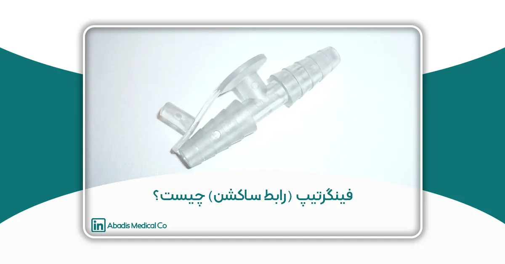

چکیده
فینگرتیپ یا رابط ساکشن یکی از اجزای کلیدی سیستمهای ساکشن پزشکی است که نقش مهمی در کنترل و تنظیم مکش مایعات و ترشحات ایفا میکند. این ابزار کوچک اما کاربردی، با قرار گرفتن میان لوله ساکشن و کاتتر مکش، امکان کنترل دقیقتر جریان مکش را برای کادر درمانی فراهم میسازد. کاربرد گسترده این ابزار در بخشهای مختلف درمانی از جمله جراحی، مراقبتهای ویژه، دندانپزشکی و کلینیکهای زیبایی، موجب افزایش کارایی سیستمهای ساکشن و بهبود عملکرد تجهیزات پزشکی شده است.
یکی از مهمترین مزایای فینگرتیپ، نقش آن در کاهش خطر انتقال عفونتهای بیمارستانی است. عفونتهای بیمارستانی از چالشهای اساسی مراکز درمانی محسوب میشوند که میتوانند منجر به افزایش مرگومیر، هزینههای درمانی و طولانیتر شدن دوره بستری بیماران شوند. استفاده از فینگرتیپهای یکبار مصرف، در مقایسه با مدلهای قابل استریل، به میزان قابل توجهی خطر انتقال آلودگی و انتشار عوامل بیماریزا را کاهش میدهد. این ابزار با کاهش تماس مستقیم کادر درمان با ترشحات آلوده، به بهبود استانداردهای بهداشتی بیمارستانها کمک کرده و نقش مهمی در پیشگیری از عفونتهای بیمارستانی ایفا میکند.
علاوه بر این، فینگرتیپها از مواد با گرید پزشکی مانند PVC ساخته شدهاند و طراحی ارگونومیک آنها استفاده آسان و سریع را برای پزشکان و پرستاران فراهم میکند. کنترل دستی مکش، جلوگیری از آسیب به بافتهای حساس و بهبود شرایط بهداشتی از دیگر مزایای این ابزار محسوب میشوند. با این حال، هزینههای جایگزینی مداوم در مدلهای یکبار مصرف و تأثیرات زیستمحیطی ناشی از پسماندهای پزشکی، از چالشهای مرتبط با استفاده گسترده از این محصول به شمار میروند.
نتایج بررسیها نشان میدهند که نوآوری در طراحی و استفاده از مواد آنتیباکتریال میتواند به بهبود عملکرد فینگرتیپها و کاهش معایب آنها کمک کند. با توجه به اهمیت این ابزار در پیشگیری از عفونتهای بیمارستانی، پیشنهاد میشود که تحقیقات بیشتری درباره بهینهسازی طراحی و افزایش کارایی فینگرتیپها صورت گیرد.
واژگان کلیدی: فینگرتیپ ساکشن، رابط ساکشن پزشکی، کنترل عفونت بیمارستانی، تجهیزات پزشکی یکبار مصرف، لوازم مصرفی بیمارستانی، کیسه ساکشن یکبار مصرف، سیستم ساکشن پزشکی
مقدمه
فینگرتیپ یا رابط ساکشن یکی از اجزای مهم در سیستمهای ساکشن پزشکی است که نقش کلیدی در کنترل مکش مایعات و ترشحات ایفا میکند. این ابزار ساده اما کاربردی به پزشکان و کادر درمانی امکان میدهد که جریان مکش را بهصورت دستی و لحظهای تنظیم کرده و فرآیندهای درمانی را با دقت بیشتری مدیریت کنند. در بسیاری از بخشهای پزشکی، از جمله جراحی، مراقبتهای ویژه، دندانپزشکی و زیبایی، فینگرتیپها به عنوان واسطهای میان ساکشن تیوب و کاتتر مکش مورد استفاده قرار میگیرند. این قطعه کوچک نهتنها به بهبود عملکرد سیستمهای ساکشن کمک میکند، بلکه با کاهش تماس مستقیم دست با ترشحات آلوده، در کنترل عفونتهای بیمارستانی نیز نقش بسزایی دارد.
اهمیت فینگرتیپ در تجهیزات پزشکی
سیستمهای ساکشن یکی از تجهیزات ضروری در بیمارستانها و مراکز درمانی هستند که برای پاکسازی ترشحات، خون و سایر مایعات بدن بیماران به کار میروند. فینگرتیپ به عنوان یک کنترلکننده دستی، این فرآیند را تسهیل میکند و به پرسنل درمانی اجازه میدهد که مکش را متناسب با نیاز بیمار تنظیم کنند. عدم استفاده از رابطهای ساکشن مناسب میتواند منجر به مشکلاتی نظیر عدم تنظیم دقیق مکش، ایجاد آسیب به بافتهای حساس و حتی انتشار عوامل بیماریزا در محیطهای درمانی شود.
امروزه، با توجه به افزایش تعداد بیماران بستری در مراکز درمانی و رشد جراحیهای تخصصی، نیاز به ابزارهای دقیقتر و بهداشتیتر بیش از پیش احساس میشود. فینگرتیپهای مدرن با استفاده از مواد زیستسازگار و استانداردهای پزشکی طراحی شدهاند تا علاوه بر کارایی بالا، حداقل خطر را برای بیمار و کادر درمانی ایجاد کنند.
نقش فینگرتیپ در بهبود عملکرد سیستمهای ساکشن
سیستمهای ساکشن از اجزای مختلفی مانند پمپ مکش، لولههای ارتباطی و محفظههای جمعآوری تشکیل شدهاند. فینگرتیپ در این میان به عنوان یک واسطه، امکان کنترل دقیقتر جریان مکش را فراهم میکند. این کنترل به ویژه در جراحیهای حساس، مانند جراحیهای مغز و اعصاب، قلب و عروق و دندانپزشکی، از اهمیت بالایی برخوردار است.
استفاده از فینگرتیپ مناسب نهتنها موجب بهبود عملکرد سیستم ساکشن میشود، بلکه در مصرف بهینه انرژی و کاهش استهلاک تجهیزات نیز تأثیرگذار است. بهعنوان مثال، در صورت عدم وجود فینگرتیپ، سیستم ساکشن ممکن است با حداکثر توان کار کند که این امر میتواند به افزایش مصرف انرژی و کاهش طول عمر دستگاه منجر شود. بنابراین، استفاده از فینگرتیپ علاوه بر مزایای پزشکی، از لحاظ اقتصادی نیز مقرونبهصرفه است.
چالشهای مرتبط با عفونتهای بیمارستانی و اهمیت ابزارهای یکبار مصرف
عفونتهای بیمارستانی یکی از معضلات جدی سیستمهای بهداشتی و درمانی در سراسر جهان هستند. این عفونتها نهتنها باعث افزایش هزینههای درمانی و طولانی شدن دوره بستری بیماران میشوند، بلکه در برخی موارد منجر به عوارض جبرانناپذیر یا حتی مرگ بیمار میشوند. یکی از مهمترین راههای پیشگیری از عفونتهای بیمارستانی، استفاده از تجهیزات پزشکی یکبار مصرف است.
فینگرتیپهای یکبار مصرف به دلیل طراحی بهداشتی و عدم نیاز به استریلسازی مجدد، احتمال انتقال عوامل بیماریزا را به میزان قابل توجهی کاهش میدهند. در مقابل، مدلهای قابل استریل نیاز به فرآیندهای پیچیدهای برای ضدعفونی دارند که در صورت عدم رعایت کامل پروتکلهای استریلیزاسیون، خطر انتشار آلودگی افزایش مییابد. به همین دلیل، بسیاری از بیمارستانها و مراکز درمانی در سالهای اخیر به سمت استفاده گسترده از تجهیزات پزشکی یکبار مصرف، از جمله فینگرتیپهای ساکشن، حرکت کردهاند.
با توجه به اهمیت فینگرتیپ در سیستمهای ساکشن و نقش آن در کنترل عفونتهای بیمارستانی، بررسی دقیقتر این ابزار و بهبود طراحی آن میتواند به بهینهسازی فرآیندهای درمانی و افزایش ایمنی بیماران کمک کند.
تعریف فینگرتیپ
فینگرتیپ (Fingertip) یا رابط ساکشن پزشکی یک قطعه کوچک اما حیاتی در سیستمهای مکش بیمارستانی است که برای کنترل جریان مکش در هنگام جمعآوری مایعات و ترشحات بدن بیمار استفاده میشود. این ابزار معمولاً از پلاستیک پزشکی (مانند پلیاتیلن یا PVC) ساخته شده و بین لوله ساکشن و منبع مکش قرار میگیرد.
فینگرتیپها بهگونهای طراحی شدهاند که با فشار یا رها کردن یک دهانه کوچک روی بدنه خود، امکان تنظیم شدت مکش را برای کادر درمانی فراهم کنند. این قابلیت در جراحیها، اورژانس، اتاقهای مراقبت ویژه و حتی دندانپزشکی اهمیت زیادی دارد، زیرا کنترل دقیق مکش میتواند از آسیب به بافتهای حساس جلوگیری کند.
اغلب فینگرتیپها یکبار مصرف هستند و پس از هر بار استفاده دور انداخته میشوند تا از انتقال عفونتهای بیمارستانی جلوگیری شود. استفاده از مدلهای چندبار مصرف یا استریلپذیر در این ابزار استاندارد نیست، زیرا فرآیند استریلیزاسیون نمیتواند بهطور کامل بقایای مواد بیولوژیکی را از بین ببرد و ریسک آلودگی را افزایش میدهد. به همین دلیل، تولید این ابزار باید مطابق با استانداردهای بهداشتی و زیستمحیطی انجام شود تا علاوه بر ایمنی بیمار، اثرات زیستمحیطی زبالههای پزشکی نیز کنترل شود.
ساختار و مکانیزم عملکرد فینگرتیپ در سیستمهای ساکشن پزشکی
فینگرتیپ یا رابط ساکشن یکی از اجزای کلیدی سیستمهای تخلیه مایعات در مراکز درمانی است که بهعنوان واسطی میان لوله ساکشن و کاتتر مکش عمل میکند. این قطعه کوچک اما کاربردی، دارای دو سر با طراحی پلکانی است که امکان اتصال ایمن و بدون نشتی به تجهیزات مختلفی نظیر کاتتر ساکشن، سوند نلاتون و سایر لوازم مشابه را فراهم میآورد. این ویژگی از نشت مایعات در هنگام مکش جلوگیری کرده و ایمنی فرآیند را افزایش میدهد.
مکانیزم عملکرد فینگرتیپ مبتنی بر کنترل دستی مکش از طریق دریچهی تعبیهشده در بدنه آن است. این ابزار به پزشکان و پرستاران اجازه میدهد که بدون نیاز به خاموش و روشن کردن دستگاه ساکشن، تنها با قرار دادن انگشت روی دریچه، مکش را فعال کرده و با برداشتن انگشت، عمل مکش را متوقف کنند. این قابلیت امکان تنظیم فشار ساکشن را متناسب با شرایط بیمار فراهم کرده و در مواقعی که به تغییرات جزئی در فشار مکش نیاز است—مانند مواردی که مواد دفعی از غلظت بالایی برخوردارند—نقشی حیاتی ایفا میکند.
فینگرتیپها معمولاً در دو سایز بزرگ و کوچک تولید میشوند که انتخاب اندازه مناسب آنها وابسته به قطر ساکشن تیوب مورد استفاده است. این ابزار از مواد مدیکال گرید و استریل ساخته شده است تا ضمن رعایت استانداردهای بهداشتی، از انتقال آلودگیهای بیمارستانی جلوگیری کند.
فینگرتیپ یا رابط ساکشن پزشکی معمولاً از پلیوینیل کلراید (PVC) مدیکال گرید ساخته میشود. این ماده به دلیل مقاومت بالا در برابر مواد شیمیایی، انعطافپذیری، استریل بودن، و زیستسازگاری، بهعنوان گزینه استاندارد در تجهیزات پزشکی مورد استفاده قرار میگیرد. PVC مدیکال گرید در برابر تغییرات دما مقاوم بوده و امکان کنترل دقیق جریان مکش را بدون خطر شکستگی یا تغییر شکل فراهم میکند.
ساختار فیزیکی فینگرتیپ شامل بدنهای استوانهای یا مخروطیشکل است که دارای دهانهای کوچک برای تنظیم شدت مکش است. این دهانه بهگونهای طراحی شده که کاربر بتواند با باز و بسته کردن آن، شدت جریان مکش را تنظیم کند. برخی مدلها دارای طراحی ارگونومیک هستند تا کادر درمان بتوانند بهراحتی و بدون خستگی زیاد، آن را در طول فرایندهای درمانی و جراحی کنترل کنند.
نحوه اتصال به سیستمهای ساکشن
فینگرتیپ در سیستمهای ساکشن بهعنوان یک رابط بین لوله ساکشن و منبع مکش عمل میکند. این ابزار معمولاً در انتهای لوله ساکشن قرار میگیرد و از طریق اتصال مخروطی به سیستم ساکشن متصل میشود. برخی از ویژگیهای مهم در نحوه اتصال آن عبارتاند از:
- اتصال ایمن و بدون نشتی: طراحی استاندارد باعث میشود که فینگرتیپ بهطور محکم روی لوله ساکشن قرار گیرد و از نشتی هوا یا کاهش مکش جلوگیری شود.
- سازگاری با سایزهای مختلف لولههای ساکشن: بیشتر مدلهای فینگرتیپ بهگونهای طراحی شدهاند که با اندازههای متنوع لولههای ساکشن سازگاری داشته باشند.
- سهولت در نصب و تعویض: به دلیل طراحی ساده، پرستاران و پزشکان میتوانند بهسرعت فینگرتیپ را در حین انجام عملیات پزشکی نصب یا تعویض کنند.
کنترل جریان مکش و تأثیر آن در عملکرد پزشکی
یکی از اصلیترین وظایف فینگرتیپ، کنترل میزان مکش و تنظیم شدت تخلیه مایعات است. این کنترل از طریق باز و بسته کردن دهانه تعبیهشده روی بدنه آن انجام میشود. زمانی که دهانه فینگرتیپ باز باشد، جریان هوا وارد ساکشن تیوب شده و شدت مکش کاهش مییابد؛ در مقابل، با بستن دهانه، جریان مکش تقویت شده و مایعات با سرعت بیشتری تخلیه میشوند.
این قابلیت در محیطهای پزشکی مزایای متعددی دارد، از جمله:
- بهبود کنترل جراح و پزشک: در جراحیها و اورژانسها، پزشک میتواند شدت مکش را بسته به نیاز بیمار و نوع جراحی تنظیم کند.
- کاهش آسیب به بافتهای بیمار: تنظیم دقیق مکش از آسیبهای احتمالی به بافتهای حساس بدن جلوگیری میکند.
- افزایش کارایی در اتاق عمل و ICU : استفاده از فینگرتیپ به پرسنل پزشکی اجازه میدهد تا کنترل بهتری بر میزان مکش داشته باشند و روند درمانی را با دقت بیشتری اجرا کنند.
در مجموع، فینگرتیپ یک ابزار ضروری در سیستمهای ساکشن پزشکی است که با طراحی ساده اما کارآمد خود، نقش مهمی در افزایش دقت مکش، کاهش خطر عفونت، و بهینهسازی عملکرد تجهیزات پزشکی ایفا میکند.
کاربردهای فینگرتیپ در پزشکی
۱. استفاده در جراحیها و اتاق عمل
فینگرتیپ یکی از اجزای کلیدی در سیستمهای ساکشن جراحی است که به جراحان کمک میکند تا خون، ترشحات و مایعات اضافی را از محل جراحی خارج کنند. این ابزار به دلیل قابلیت کنترل میزان مکش، دقت عمل جراح را افزایش داده و دید بهتری نسبت به ناحیه جراحی فراهم میکند. همچنین، بهبود کنترل مایعات میتواند خطر آلودگی متقاطع و عفونتهای بیمارستانی را کاهش دهد.
۲. کاربرد در بخشهای مراقبت ویژه (ICU و CCU)
در بخشهای مراقبتهای ویژه، کنترل ترشحات بیماران، بهویژه بیمارانی که از دستگاههای ونتیلاتور استفاده میکنند، بسیار مهم است. فینگرتیپ در کنار سیستمهای ساکشن پزشکی به حذف ترشحات راههای هوایی کمک میکند و احتمال ایجاد عفونتهای تنفسی نظیر پنومونی ناشی از ونتیلاتور (VAP) را کاهش میدهد.
۳. استفاده در دندانپزشکی
در کلینیکهای دندانپزشکی، از فینگرتیپ برای کنترل رطوبت دهان و حذف بزاق، خون و ذرات ناشی از فرایندهای درمانی مانند جراحیهای دهان و کشیدن دندان استفاده میشود. این امر نهتنها باعث بهبود دید دندانپزشک میشود، بلکه از ورود مایعات به نای بیمار جلوگیری کرده و تجربه درمانی راحتتری را برای او فراهم میکند.
۴. کاربرد در بخشهای اورژانس و آمبولانسها
در شرایط اورژانسی، سرعت و کارایی تجهیزات پزشکی اهمیت زیادی دارد. فینگرتیپ در کنار سیستمهای ساکشن قابل حمل، به حذف ترشحات و مواد انسدادی از راههای هوایی بیماران در آمبولانسها کمک میکند. این کاربرد در مواقعی که بیماران دچار مشکلات تنفسی حاد شدهاند، حیاتی است.
۵. استفاده در بخشهای زیبایی و پوست
در برخی از کلینیکهای زیبایی و در فرآیندهایی مانند لیپوساکشن، از سیستمهای ساکشن برای حذف چربیهای اضافی استفاده میشود. فینگرتیپ در این موارد برای کنترل میزان مکش و بهینهسازی فرایند تخلیه چربی مورد استفاده قرار میگیرد.
۶. نقش در کنترل عفونتهای بیمارستانی
با توجه به اینکه فینگرتیپهای یکبار مصرف میتوانند پس از هر بیمار تعویض شوند، استفاده از آنها بهطور قابلتوجهی از انتقال عفونتهای بیمارستانی جلوگیری میکند. در مقابل، استفاده از فینگرتیپهای غیریکبارمصرف مستلزم رعایت پروتکلهای دقیق استریلسازی است تا از انتقال آلودگی بین بیماران پیشگیری شود.
فینگرتیپ (رابط ساکشن) در بخشهای مختلف پزشکی نقش مهمی ایفا میکند و با کمک به کنترل مایعات و ترشحات، به بهبود کیفیت درمان، کاهش خطر عفونتها و افزایش دقت در فرایندهای پزشکی کمک میکند. انتخاب نوع مناسب فینگرتیپ با توجه به نیازهای هر بخش درمانی میتواند تأثیر زیادی در کارایی و ایمنی سیستمهای ساکشن داشته باشد.
مزایا و معایب فینگرتیپ در تجهیزات پزشکی
مزایا:
۱.کاهش ریسک انتقال عفونت
یکی از مهمترین مزایای فینگرتیپهای یکبار مصرف، کاهش احتمال انتقال عفونتهای بیمارستانی است. با استفاده از این تجهیزات، خطر آلودگی متقاطع بین بیماران کاهش مییابد، زیرا پس از هر بار استفاده، فینگرتیپ دور انداخته شده و جایگزین میشود.
۲.بهبود کنترل مکش
فینگرتیپ به کادر درمانی این امکان را میدهد که میزان مکش را بهطور دستی تنظیم کنند. این ویژگی در جراحیها و فرایندهای پزشکی که نیاز به تنظیم دقیق ساکشن دارند، بسیار حیاتی است. بهبود کنترل مکش باعث افزایش دقت در حذف مایعات و ترشحات میشود و دید بهتری را برای پزشکان فراهم میکند.
۳.استفاده آسان و سریع
فینگرتیپ به دلیل طراحی ساده و ارگونومیک، کاربری آسانی دارد. پزشکان و پرستاران میتوانند بهسرعت آن را به سیستم ساکشن متصل کرده و بدون نیاز به آموزشهای پیچیده از آن استفاده کنند. همچنین، تعویض سریع این قطعه باعث صرفهجویی در زمان و افزایش بهرهوری کادر درمانی میشود.
معایب:
۱.هزینههای جایگزینی در مدلهای یکبار مصرف
یکی از چالشهای استفاده از فینگرتیپهای یکبار مصرف، هزینههای مداوم خرید و جایگزینی آنها است. در مراکز درمانی با حجم بالای بیماران، این هزینهها میتواند قابل توجه باشد. با این حال، این هزینه در مقایسه با کاهش ریسک عفونت و هزینههای ناشی از درمان عفونتهای بیمارستانی، توجیهپذیر است.
۲.اثرات زیستمحیطی
فینگرتیپهای یکبار مصرف عمدتاً از PVC مدیکال گرید ساخته میشوند که به دلیل ترکیبات پلاستیکی، تجزیهپذیری بالایی در محیط زیست ندارند. افزایش حجم زبالههای پزشکی ناشی از مصرف این تجهیزات، یکی از دغدغههای زیستمحیطی محسوب میشود. برخی از تولیدکنندگان در تلاشاند تا از مواد قابل بازیافت یا روشهای دفع بهینه برای کاهش اثرات مخرب زیستمحیطی استفاده کنند.
در مجموع، فینگرتیپ (رابط ساکشن) یک ابزار ضروری در سیستمهای ساکشن پزشکی است که مزایای مهمی مانند کاهش عفونت، بهبود کنترل مکش و سهولت استفاده را به همراه دارد. با این حال، هزینههای جایگزینی و ملاحظات زیستمحیطی از جمله چالشهای آن محسوب میشوند. انتخاب بین مدلهای یکبار مصرف و چندبار مصرف باید بر اساس نیازهای بیمارستان، هزینهها و استراتژیهای کنترل عفونت انجام شود.
نتیجهگیری
فینگرتیپ یا رابط ساکشن پزشکی، به عنوان یک ابزار کوچک اما مؤثر، نقش حیاتی در بهبود عملکرد سیستمهای ساکشن بیمارستانی و کنترل عفونتهای بیمارستانی ایفا میکند. این قطعه با قرارگیری میان لوله ساکشن و کاتتر مکش، امکان کنترل دقیقتر جریان مکش را برای کادر درمانی فراهم کرده و از آسیب به بافتهای حساس بیمار جلوگیری میکند. استفاده از مدلهای یکبار مصرف این ابزار، به دلیل کاهش خطر انتقال عفونت، نسبت به نمونههای قابل استریل، گزینهای بهداشتیتر و مطمئنتر محسوب میشود.
با این حال، چالشهایی مانند هزینههای مداوم جایگزینی و اثرات زیستمحیطی ناشی از پسماندهای پزشکی، همچنان دغدغههایی در استفاده گسترده از فینگرتیپهای یکبار مصرف هستند. نوآوری در طراحی، استفاده از مواد آنتیباکتریال و توسعه روشهای پایدارتر در تولید این ابزار میتواند به کاهش این چالشها کمک کند.
با توجه به اهمیت فینگرتیپ در سیستمهای پزشکی، انجام تحقیقات بیشتر در زمینه بهینهسازی طراحی، افزایش کارایی، و کاهش اثرات زیستمحیطی این محصول ضروری است. همچنین، ترویج استانداردهای بهداشتی و افزایش آگاهی در خصوص اهمیت استفاده از تجهیزات یکبار مصرف در کاهش عفونتهای بیمارستانی میتواند گامی مؤثر در جهت ارتقای کیفیت خدمات درمانی باشد.